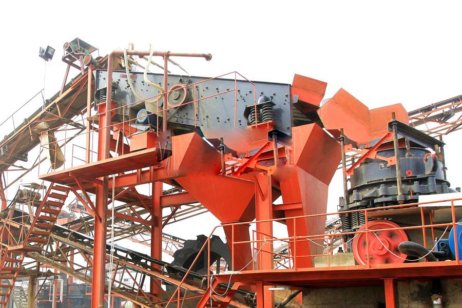

Construction waste crushing production line

Mobile construction waste crushing station for urban construction waste crushing.
Stone Quarrying Process Line
Stone Quarrying Process Line, Optimization quarry crushing and screening technology and equipment, in order to meet the requirements of quarry production process and capacity requirements, to create a good production conditions, CAG traditional quarry crushing and screening process was optimized.
Supply quarry crushing and screening transportation equipment, stone production line product attribute type crusher applications highway, railway, construction, water conservancy, concrete mixing stations and other industries to provide stone feed size 350 (mm) the particle size can be adjusted.

Quarry crushing and screening equipment
CAG Quarrying equipment manufacturer supply jaw crushers, cone crushers, screening plants, sand washing machine, vibrating screen and belt conveyors. We offer new Quarrying equipment for pit, quarrying, mining and recycling industries. We also provide Turn Key Complete crushing and Screening systems as well as plant design.
Quarry crushing and screening plant
A Quarrying plant is a type of strip mine from which rock or minerals are extracted. Quarries are generally used for extracting building materials, such as dimension stone, construction aggregate, riprap, sand, and gravel. They are often colocated with concrete and asphalt plants due to the requirement for large amounts of aggregate in those materials. The word quarry can include underground quarrying for stone, such as Bath stone.
Mobile crushing and screening equipment in Shandong Zibo quarry successfully applied in recent years, mobile crushing and screening equipment in aggregate processing industry has become increasingly popular. The main reason is that the mobile device has a stationary device irreplaceable advantages: the ability to quickly transfer site, mobility and flexible.
Zimbabwe quarry crushing screening equipment for sale. With the increase of technology many more usages of lime were found. It is burnt in kilns to produce lime, white colur and finally cement. It is needed to produce glass, porcellain, or as addition in the melting of many metals. It is used to purify coal and the waste gas of power plants using carbon based fuel. Limestone neutralizes many toxic substances, especially sulfur oxide and sulfur dioxide. In combination with sulfur it is converted into gypsum. Limestone is typically quarried, as it occurs in huge sedimentary layers, and as mining is to expensive.
Quarry crushing and screening equipment for sale
CAG is a famous stone crushing and screening equipment manufacturer in China. CAG quarry crushing equipment provides a comprehensive range of high performance, high quality quarry crusher and quarry crushing equipment spare parts for customers, which includes jaw crusher, vertical shaft impactor, cone crusher, vibrating screen, vibrating feeder and mobile crushing and screening plant to meet the toughest quarry crushing demands of quarrying, mining, gravel, hard rock, crushed rock, coal, limestone, mineral ores and recycling industries etc.
River gravel sand production line equipment, gravel crushing and screening equipment, CAG Mining Machinery Co., Ltd. is located in Zhengzhou, machinery manufacturing and processing industrial park, the company set the development, production, sales, specializing in crushing equipment, drying equipment, milling equipment, Woodworking equipment production-oriented enterprises.
Zimbabwe quarry crushing screening equipment manufacturer, Quarry crusher, quarry crushing equipment, quarry equipment are made by a variety of configuration optimization of mining machinery and equipment, including mountains blasting equipment, feeding equipment, broken equipment, screening equipment, sand making equipment, belt equipment, environmental dust and material handling equipment.
Leave Me A Message, Now
If you have any questions regarding equipment prices, production line configuration or other problems, you can send a message to us, we will contact you soon.